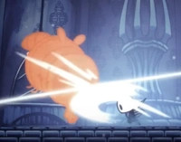
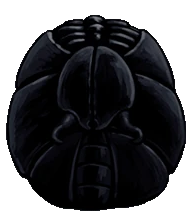
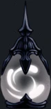

ALMA
¿Qué es?
ALMA es el término utilizado para la energía blanca extraída de los enemigos y los Tótems del Alma.
Está representado en la interfaz del jugador por un medidor circular que se llena de líquido blanco, revelando dos agujeros para los ojos y dando al medidor la apariencia de una máscara.
Notas:
Los porcentajes en este artículo se basan en observaciones visuales y lecturas de aplicaciones externas. No hay forma de ver los valores exactos del ALMA en el juego.
Los porcentajes se redondean para simplificar (33% es en realidad 33.333 ...%, etc., entonces 99% = 100%
Usos
El ALMA se utiliza para lanzar Hechizos que infligen daño o usar la Concentración, que sana al jugador a lo largo del tiempo.
Cuando el jugador gana suficiente ALMA para lanzar un hechizo, el medidor se iluminará brevemente y se reproducirá un sonido.
Inicialmente, lanzar Hechizos requiere 33% del medidor. Usar el amuleto de Tuercehechizos reduce el coste al 24% del medidor.
Vasijas de alma
Las Vasijas de Alma son almacenes adicionales para ALMA, representados por un pequeño circulo a la izquierda del medidor principal de ALMA.
Se pueden adquirir hasta 3 a través del juego coleccionando Fragmentos de vasija. 3 Fragmentos son necesarios para crear una Vasija de Alma.
Si el jugador gana ALMA mientras su medidor principal de ALMA está lleno, el alma será transferida a una de las Vasijas de Alma, empezando con el de abajo.
Una Vasija de Alma requiere 66% del medidor para llenar completamente.
Si el medidor de ALMA principal tiene espacio vacío, y el jugador no está lanzando un Hechizo o usando la Concentración,
las Vasijas del Alma rellenarán automáticamente el medidor de ALMA a una tasa de 33% por Vasija.
Es importante tener en cuenta que esto significa que se necesita más ALMA para llenar las Vasijas de Almas que lo que regresan de las Vasijas.
Debido a esto, si un jugador está en una pelea larga y está ganando ALMA constantemente para utilizarlo en Hechizos o Concentración,
es mejor usar el medidor principal tan pronto como sea posible, ya que hay una demora entre quedarse sin ALMA en el medidor principal y que sea rellenado por las Vasijas de Alma.
Adquirir alma
Hay varias maneras de adquirir ALMA a lo largo del juego:
Atacando enemigos

Los enemigos golpeados con el Aguijón hacen que el jugador gane ALMA a una tasa de 11% por golpe. Varios Amuletos pueden modificar esta cantidad:
Atrapaalmas incrementa la cantidad de ALMA conseguida a 14%
Devoraalmas incrementa la cantidad de ALMA conseguida a 19%
Los dos amuletos anteriores se acumulan, lo que aumenta la cantidad de ALMA ganada al 22%
Aguijon onírico

Los enemigos impactantes con el Aguijón Onírico llenarán el medidor ALMA del jugador en un 33%.
El amuleto Portador onírico duplica esta cantidad al 66%
Tótems de alma

Los Tótems de Alma son estructuras que se encuentran en todo Hallownest.
Brillan con la energía del Alma cuando el jugador se acerca. Cuando se golpea con el Aguijón,
liberan orbes de energía que son absorbidos por el jugador y regeneran el 11% del valor de ALMA de un buque.
Después de una cierta cantidad de golpes, la estatua dejará de brillar y ya no dará ALMA. Se recargará cuando el jugador se siente en un Banco.
Hay cuatro tamaños diferentes de Tótems de Alma, cada uno otorgando una cantidad diferente de ALMA:
Pequeño: 33%
Mediano: 100%
Grande: 166%
Tótem Rey: Ilimitado (sólo en el Palacio Blanco)
Cachés de alma

Los cachés de Alma se encuentran en el Santuario de Almas en la Ciudad de Lágrimas.
Son frascos de vidrio que contienen las mismas esferas de energía que los Tótems de Alma, aunque romper uno solo otorga el 22% del medidor.
Otras formas
Estar parado en las Aguas Termales lentamente regenerará el ALMA a lo largo del tiempo a una tasa del 50% del medidor por segundo.
El amuleto Canción de larvas regenera un 15% del medidor cada vez que el jugador reciba daño.
El amuleto Alma del Monarca regenerará regenerará el ALMA lentamente a lo largo del tiempo a una tasa de 2% del medidor por segundo.
La Bendición de Salubra regenerará el ALMA cada vez que el jugador se siente en un Banco, es la misma tasa que al estar parado en las Aguas Termales.
Geo

La moneda de Hallownest, hecha de corazas fosilizadas de diversas formas. Se puede usar para comprar bienes o pagar el peaje en diversos mecanismos antiguos.
Funciones
Se usa para:
Comprar objetos a mercaderes
Activar estaciones de ciervos, tranvías y bancos.
Pagar al Herrero para mejorar el aguijón del Caballero.
Obtener un Fragmento de vasija al echar Geo3000 en una fuente de Cuenca Antigua.
Hacer irrompibles amuletos con Divine.
Como conseguirlo
Derrotando a enemigos
Rompiendo depositos de geo
Abriendo cofres
Vendiendo reliquias a Lemm
Rescatando larvas cautivas
Completando un desafío en el coliseo de los insensatos